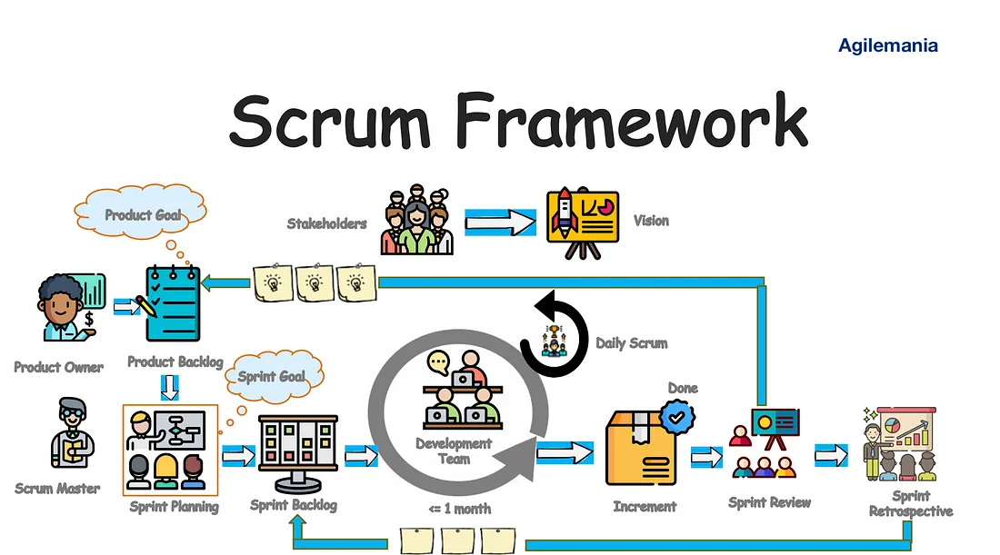

Các phương pháp Agile phổ biến#
1. Scrum#
Scrum là một framework Agile phổ biến, tập trung vào việc quản lý dự án thông qua các sprint ngắn, thường kéo dài từ 2-4 tuần.
Trong Scrum, công việc được quản lý thông qua các Sprint và Backlog.
Sprint: Là khoảng thời gian cố định, thường từ 2-4 tuần, trong đó một phần công việc cụ thể được hoàn thành và sẵn sàng để xem xét. Mỗi Sprint bắt đầu với một cuộc họp Sprint Planning, nơi các thành viên trong nhóm thảo luận và lập kế hoạch cho công việc sẽ được thực hiện trong Sprint đó. Sprint kết thúc với Sprint Review và Sprint Retrospective để đánh giá và cải thiện quy trình.
Product Backlog: Là danh sách các công việc cần làm để phát triển sản phẩm. Product Owner chịu trách nhiệm quản lý Product Backlog, đảm bảo rằng nó luôn được cập nhật, rõ ràng và ưu tiên theo giá trị kinh doanh. Các mục trong Product Backlog có thể bao gồm tính năng mới, sửa lỗi, cải tiến kỹ thuật và các yêu cầu khác.
Sprint Backlog: Là danh sách các công việc được chọn từ Product Backlog để hoàn thành trong một Sprint. Sprint Backlog được tạo ra trong cuộc họp Sprint Planning và được Development Team quản lý trong suốt Sprint. Nó bao gồm các nhiệm vụ cụ thể mà nhóm sẽ thực hiện để hoàn thành các mục tiêu của Sprint.
Scrum sử dụng các công cụ này để đảm bảo rằng công việc được tổ chức, minh bạch và có thể dự đoán được, giúp nhóm phát triển phần mềm một cách hiệu quả và đáp ứng nhanh chóng các thay đổi yêu cầu.

Nguồn: Professional Scrum Master (PSM) Training
Các vai trò trong Scrum#
Product Owner: Người chịu trách nhiệm tối ưu hóa giá trị của sản phẩm và công việc của Development Team. Product Owner quản lý Product Backlog và đảm bảo rằng nó rõ ràng, minh bạch và được hiểu bởi tất cả các thành viên trong nhóm.
Scrum Master: Người chịu trách nhiệm đảm bảo rằng Scrum được hiểu và thực hiện đúng. Scrum Master giúp đỡ Development Team và tổ chức áp dụng các thực hành Scrum đúng cách.
Development Team: Nhóm các chuyên gia chịu trách nhiệm phát triển và hoàn thành các công việc trong Sprint. Development Team tự tổ chức và tự quản lý công việc của mình.
Sprint Planning: Cuộc họp bắt đầu mỗi Sprint, nơi Development Team và Product Owner thảo luận và lập kế hoạch cho công việc sẽ được thực hiện trong Sprint.
Daily Stand-up: Cuộc họp ngắn hàng ngày, thường kéo dài 15 phút, nơi các thành viên trong Development Team chia sẻ tiến độ, kế hoạch và các trở ngại gặp phải.
Sprint Review: Cuộc họp diễn ra vào cuối mỗi Sprint, nơi Development Team trình bày các công việc đã hoàn thành và nhận phản hồi từ các bên liên quan.
Sprint Retrospective: Cuộc họp diễn ra sau Sprint Review, nơi Development Team và Scrum Master thảo luận về những gì đã diễn ra tốt, những gì cần cải thiện và lập kế hoạch cho các cải tiến trong Sprint tiếp theo.
Sản phẩm đầu ra của Scrum#
Sản phẩm đầu ra của Scrum bao gồm các kết quả cụ thể từ mỗi Sprint và các tài liệu liên quan đến quy trình Scrum. Các sản phẩm đầu ra chính bao gồm:
Increment: Là phiên bản hoàn chỉnh và có thể sử dụng của sản phẩm sau mỗi Sprint. Increment phải đáp ứng các tiêu chuẩn chất lượng và sẵn sàng để phát hành nếu cần thiết.
Sprint Goal: Là mục tiêu cụ thể mà nhóm đặt ra để đạt được trong mỗi Sprint. Sprint Goal giúp định hướng công việc và đảm bảo rằng tất cả các thành viên trong nhóm đều hiểu rõ mục tiêu của Sprint.
Sprint Backlog: Là danh sách các công việc được chọn từ Product Backlog để hoàn thành trong một Sprint. Sprint Backlog được cập nhật liên tục trong suốt Sprint để phản ánh tiến độ và các thay đổi nếu có.
Product Backlog: Là danh sách các công việc cần làm để phát triển sản phẩm. Product Backlog được cập nhật liên tục bởi Product Owner để phản ánh các yêu cầu mới, thay đổi ưu tiên và các công việc đã hoàn thành.
Các sản phẩm đầu ra này giúp đảm bảo rằng nhóm phát triển phần mềm có thể cung cấp giá trị liên tục và đáp ứng nhanh chóng các thay đổi yêu cầu từ khách hàng và các bên liên quan.
2. Kanban#

Nguồn: Scrumpass
Kanban là một phương pháp Agile tập trung vào việc trực quan hóa quy trình làm việc và tối ưu hóa luồng công việc. Kanban giúp các nhóm phát triển phần mềm cải thiện hiệu suất và đáp ứng nhanh chóng các thay đổi yêu cầu. Các nguyên tắc chính của Kanban bao gồm:
Trực quan hóa công việc: Sử dụng bảng Kanban để hiển thị các công việc và trạng thái của chúng. Các công việc được biểu diễn dưới dạng thẻ và di chuyển qua các cột tương ứng với các giai đoạn của quy trình làm việc.
Giới hạn công việc đang tiến hành (WIP): Đặt giới hạn cho số lượng công việc đang tiến hành trong mỗi giai đoạn của quy trình. Điều này giúp ngăn ngừa quá tải và đảm bảo rằng nhóm tập trung vào hoàn thành công việc trước khi bắt đầu công việc mới.
Quản lý luồng công việc: Theo dõi và quản lý luồng công việc để đảm bảo rằng công việc di chuyển qua các giai đoạn một cách mượt mà và hiệu quả. Sử dụng các chỉ số như thời gian chu kỳ (cycle time) và thời gian dẫn (lead time) để đo lường hiệu suất.
Liên tục cải tiến: Thường xuyên đánh giá và cải tiến quy trình làm việc để tăng cường hiệu suất và chất lượng. Sử dụng các cuộc họp định kỳ như Kaizen để thảo luận và thực hiện các cải tiến.
Kanban giúp các nhóm phát triển phần mềm duy trì sự linh hoạt và đáp ứng nhanh chóng các thay đổi yêu cầu từ khách hàng và các bên liên quan. Bằng cách trực quan hóa công việc và giới hạn WIP, Kanban giúp tối ưu hóa luồng công việc và cải thiện hiệu suất tổng thể của nhóm.
Các practices và công cụ của Kanban#
Kanban sử dụng một số practices và công cụ để giúp các nhóm phát triển phần mềm quản lý công việc hiệu quả hơn. Dưới đây là một số practices và công cụ chính của Kanban:
Kanban Board: Bảng Kanban là công cụ trực quan hóa công việc, giúp nhóm theo dõi trạng thái của các công việc. Bảng Kanban thường được chia thành các cột tương ứng với các giai đoạn của quy trình làm việc, như “To Do”, “In Progress”, và “Done”.
Kanban Cards: Các thẻ Kanban đại diện cho các công việc hoặc nhiệm vụ cụ thể. Mỗi thẻ chứa thông tin chi tiết về công việc, như mô tả, người chịu trách nhiệm, và ngày hoàn thành dự kiến. Các thẻ được di chuyển qua các cột trên bảng Kanban khi công việc tiến triển.
Work In Progress (WIP) Limits: Giới hạn WIP là số lượng tối đa các công việc có thể đang tiến hành trong mỗi giai đoạn của quy trình. Giới hạn WIP giúp ngăn ngừa quá tải và đảm bảo rằng nhóm tập trung vào hoàn thành công việc trước khi bắt đầu công việc mới.
Cycle Time: Thời gian chu kỳ là khoảng thời gian từ khi một công việc bắt đầu cho đến khi nó hoàn thành. Theo dõi thời gian chu kỳ giúp nhóm hiểu rõ hơn về hiệu suất và khả năng dự đoán của quy trình làm việc.
Lead Time: Thời gian dẫn là khoảng thời gian từ khi một yêu cầu được đưa vào hệ thống cho đến khi nó hoàn thành. Thời gian dẫn giúp đo lường hiệu quả của quy trình từ góc độ khách hàng.
Cumulative Flow Diagram (CFD): Biểu đồ luồng tích lũy là công cụ trực quan hóa giúp nhóm theo dõi luồng công việc qua các giai đoạn của quy trình. CFD giúp xác định các điểm tắc nghẽn và cải thiện hiệu suất.

Nguồn: Microtool
Kaizen: Kaizen là thực hành liên tục cải tiến quy trình làm việc. Nhóm thường xuyên tổ chức các cuộc họp Kaizen để thảo luận về những gì đã diễn ra tốt, những gì cần cải thiện, và lập kế hoạch cho các cải tiến.
Các practices và công cụ này giúp Kanban trở thành một phương pháp linh hoạt và hiệu quả để quản lý công việc, tối ưu hóa luồng công việc và cải thiện hiệu suất tổng thể của nhóm phát triển phần mềm.
3. Extreme Programming (XP)#

Nguồn: pythian.com
3. Extreme Programming (XP)#
Extreme Programming (XP) là một phương pháp Agile tập trung vào việc cải thiện chất lượng phần mềm và khả năng đáp ứng thay đổi yêu cầu. XP khuyến khích các nhóm phát triển phần mềm áp dụng các thực hành tốt nhất và liên tục cải tiến quy trình làm việc. Các thực hành chính của XP bao gồm:
Phát triển theo cặp (Pair Programming): Hai lập trình viên làm việc cùng nhau trên một máy tính, một người viết mã và người kia xem xét mã. Điều này giúp cải thiện chất lượng mã và chia sẻ kiến thức giữa các thành viên trong nhóm.
Kiểm thử liên tục (Continuous Testing): Việc kiểm thử phần mềm được thực hiện liên tục trong suốt quá trình phát triển. Các bài kiểm thử tự động được viết trước khi mã được triển khai, giúp phát hiện lỗi sớm và đảm bảo chất lượng phần mềm.
Tích hợp liên tục (Continuous Integration): Mã nguồn được tích hợp và kiểm thử thường xuyên, thường là hàng ngày hoặc thậm chí nhiều lần trong ngày. Điều này giúp phát hiện sớm các vấn đề tích hợp và giảm rủi ro.
Phản hồi nhanh (Rapid Feedback): XP khuyến khích việc nhận phản hồi nhanh chóng từ khách hàng và các bên liên quan thông qua các bản phát hành thường xuyên và các cuộc họp định kỳ. Phản hồi nhanh giúp nhóm điều chỉnh và cải tiến sản phẩm kịp thời.
XP cũng bao gồm các thực hành khác như lập kế hoạch phát hành (Release Planning), lập kế hoạch lặp (Iteration Planning), và cải tiến liên tục (Continuous Improvement). Bằng cách áp dụng các thực hành này, XP giúp các nhóm phát triển phần mềm tạo ra sản phẩm chất lượng cao và đáp ứng nhanh chóng các thay đổi yêu cầu từ khách hàng.
Nguồn: pythian.com
Feedback Loops trong Extreme Programming (XP)#

Nguồn: AltexSoft
Extreme Programming (XP) sử dụng nhiều vòng phản hồi (feedback loops) để đảm bảo rằng nhóm phát triển phần mềm có thể nhanh chóng phát hiện và giải quyết các vấn đề, cũng như cải thiện quy trình làm việc. Các vòng phản hồi chính trong XP bao gồm:
Phản hồi từ khách hàng: XP khuyến khích việc nhận phản hồi thường xuyên từ khách hàng thông qua các bản phát hành thường xuyên và các cuộc họp định kỳ. Điều này giúp nhóm hiểu rõ hơn về yêu cầu của khách hàng và điều chỉnh sản phẩm kịp thời.
Phản hồi từ kiểm thử: Việc kiểm thử liên tục và tự động giúp nhóm phát hiện sớm các lỗi và vấn đề trong mã nguồn. Các bài kiểm thử được viết trước khi mã được triển khai, đảm bảo rằng mã luôn đáp ứng các tiêu chuẩn chất lượng.
Phản hồi từ tích hợp: Tích hợp liên tục giúp nhóm phát hiện sớm các vấn đề tích hợp và giảm rủi ro. Mã nguồn được tích hợp và kiểm thử thường xuyên, thường là hàng ngày hoặc thậm chí nhiều lần trong ngày.
Phản hồi từ phát triển theo cặp: Phát triển theo cặp (Pair Programming) giúp cải thiện chất lượng mã và chia sẻ kiến thức giữa các thành viên trong nhóm. Một lập trình viên viết mã trong khi người kia xem xét mã, cung cấp phản hồi ngay lập tức.
Phản hồi từ các cuộc họp định kỳ: XP sử dụng các cuộc họp định kỳ như lập kế hoạch lặp (Iteration Planning) và cải tiến liên tục (Continuous Improvement) để thảo luận về tiến độ, các vấn đề gặp phải và các cải tiến cần thiết. Các cuộc họp này giúp nhóm duy trì sự nhất quán và liên tục cải thiện quy trình làm việc.
Các vòng phản hồi này giúp XP trở thành một phương pháp linh hoạt và hiệu quả để phát triển phần mềm, đảm bảo rằng nhóm có thể nhanh chóng đáp ứng các thay đổi yêu cầu và cung cấp sản phẩm chất lượng cao.
4. Lean Software Development#
Lean Software Development#
Lean Software Development là một phương pháp Agile dựa trên các nguyên tắc của Lean Manufacturing, tập trung vào việc tối ưu hóa quy trình phát triển phần mềm. Các nguyên tắc chính của Lean bao gồm:
Loại bỏ lãng phí: Xác định và loại bỏ các hoạt động không tạo ra giá trị trong quy trình phát triển phần mềm.
Tăng cường học hỏi: Khuyến khích việc học hỏi liên tục và cải tiến quy trình làm việc thông qua phản hồi và thử nghiệm.
Quyết định càng muộn càng tốt: Trì hoãn các quyết định quan trọng cho đến khi có đủ thông tin để đưa ra quyết định chính xác.
Giao hàng càng sớm càng tốt: Phát hành các phiên bản phần mềm nhỏ và thường xuyên để nhận phản hồi sớm từ khách hàng.
Trao quyền cho nhóm: Trao quyền cho các thành viên trong nhóm để họ có thể tự quản lý và đưa ra các quyết định quan trọng.
Xây dựng chất lượng trong quy trình: Tích hợp các hoạt động kiểm thử và đảm bảo chất lượng vào từng giai đoạn của quy trình phát triển.
Tối ưu hóa toàn bộ hệ thống: Tối ưu hóa quy trình làm việc từ đầu đến cuối để đảm bảo hiệu suất và hiệu quả cao nhất.
Lean Software Development giúp các nhóm phát triển phần mềm tạo ra sản phẩm chất lượng cao, giảm thiểu lãng phí và đáp ứng nhanh chóng các thay đổi yêu cầu từ khách hàng.
Các công cụ và thực hành của Lean#
Lean Software Development sử dụng một số công cụ và thực hành để tối ưu hóa quy trình phát triển phần mềm và loại bỏ lãng phí. Dưới đây là một số công cụ và thực hành chính của Lean:
Value Stream Mapping: Công cụ này giúp nhóm xác định và phân tích các bước trong quy trình phát triển phần mềm để tìm ra các hoạt động không tạo ra giá trị và loại bỏ chúng.
Just-In-Time (JIT): Thực hành này đảm bảo rằng các tài nguyên và công việc chỉ được cung cấp khi cần thiết, giúp giảm thiểu lãng phí và tối ưu hóa luồng công việc.
Kaizen: Kaizen là thực hành liên tục cải tiến quy trình làm việc. Nhóm thường xuyên tổ chức các cuộc họp Kaizen để thảo luận về những gì đã diễn ra tốt, những gì cần cải thiện, và lập kế hoạch cho các cải tiến.
5 Whys: Kỹ thuật này được sử dụng để tìm ra nguyên nhân gốc rễ của các vấn đề bằng cách hỏi “Tại sao?” năm lần hoặc cho đến khi nguyên nhân gốc rễ được xác định.
Kanban: Lean sử dụng bảng Kanban để trực quan hóa công việc và quản lý luồng công việc. Bảng Kanban giúp nhóm theo dõi trạng thái của các công việc và giới hạn công việc đang tiến hành (WIP).
Poka-Yoke: Đây là kỹ thuật ngăn ngừa lỗi bằng cách thiết kế quy trình hoặc công cụ để ngăn chặn các lỗi xảy ra hoặc phát hiện chúng ngay lập tức.
Continuous Integration (CI): Thực hành này đảm bảo rằng mã nguồn được tích hợp và kiểm thử thường xuyên, giúp phát hiện sớm các vấn đề và giảm rủi ro.

Nguồn: PagerDuty
Test-Driven Development (TDD): TDD là thực hành viết các bài kiểm thử tự động trước khi viết mã, giúp đảm bảo rằng mã luôn đáp ứng các tiêu chuẩn chất lượng và giảm thiểu lỗi.

Nguồn: Spiceworks
Các công cụ và thực hành này giúp Lean Software Development trở thành một phương pháp hiệu quả để phát triển phần mềm, tối ưu hóa quy trình làm việc và cải thiện chất lượng sản phẩm.
5. Crystal#
Crystal là một họ các phương pháp Agile, mỗi phương pháp được thiết kế để phù hợp với quy mô và độ phức tạp của dự án. Các phiên bản phổ biến của Crystal bao gồm:
Crystal Clear: Dành cho các dự án nhỏ với tối đa 6-8 thành viên. Crystal Clear tập trung vào giao tiếp trực tiếp, phản hồi nhanh và cải tiến liên tục.
Crystal Yellow: Dành cho các dự án vừa với khoảng 10-20 thành viên. Crystal Yellow bổ sung thêm các thực hành quản lý và kiểm soát để đảm bảo hiệu quả.
Crystal Orange: Dành cho các dự án lớn với khoảng 20-50 thành viên. Crystal Orange yêu cầu các công cụ và quy trình phức tạp hơn để quản lý sự phối hợp giữa các nhóm.
Crystal Red: Dành cho các dự án rất lớn với hơn 50 thành viên. Crystal Red bao gồm các thực hành và công cụ tiên tiến để quản lý sự phức tạp và đảm bảo chất lượng.
Crystal nhấn mạnh vào việc tối ưu hóa giao tiếp và tương tác giữa các thành viên trong nhóm, đồng thời khuyến khích việc điều chỉnh quy trình làm việc để phù hợp với nhu cầu cụ thể của dự án. Các nguyên tắc chính của Crystal bao gồm:
Giao tiếp trực tiếp: Khuyến khích các cuộc họp mặt trực tiếp và giao tiếp thường xuyên giữa các thành viên trong nhóm để đảm bảo sự hiểu biết và phối hợp tốt.
Phản hồi nhanh: Nhận phản hồi nhanh chóng từ khách hàng và các bên liên quan để điều chỉnh sản phẩm kịp thời.
Cải tiến liên tục: Thường xuyên đánh giá và cải tiến quy trình làm việc để tăng cường hiệu suất và chất lượng.
Tập trung vào con người: Đặt con người và sự tương tác lên hàng đầu, đảm bảo rằng các thành viên trong nhóm có môi trường làm việc tốt và động lực cao.
Crystal giúp các nhóm phát triển phần mềm tạo ra sản phẩm chất lượng cao, đáp ứng nhanh chóng các thay đổi yêu cầu và tối ưu hóa quy trình làm việc dựa trên quy mô và độ phức tạp của dự án.
6. Feature-Driven Development (FDD)#
Feature-Driven Development (FDD) là một phương pháp Agile tập trung vào việc phát triển phần mềm thông qua các tính năng nhỏ, có thể giao hàng. FDD giúp đảm bảo rằng phần mềm được phát triển một cách có cấu trúc và có thể dự đoán được, đồng thời đáp ứng nhanh chóng các thay đổi yêu cầu từ khách hàng. Các bước chính của FDD bao gồm:
Các bước chính của FDD#
Phát triển mô hình tổng thể: Bước đầu tiên trong FDD là phát triển một mô hình tổng thể của hệ thống. Nhóm phát triển và các bên liên quan cùng nhau tạo ra một mô hình khái quát, giúp hiểu rõ hơn về hệ thống và các yêu cầu chính.
Xây dựng danh sách tính năng: Sau khi có mô hình tổng thể, nhóm phát triển xây dựng một danh sách các tính năng cần thiết để hoàn thành hệ thống. Mỗi tính năng là một phần nhỏ của hệ thống, có thể được phát triển và kiểm thử độc lập.
Lập kế hoạch theo tính năng: Nhóm phát triển lập kế hoạch cho từng tính năng trong danh sách. Kế hoạch này bao gồm việc xác định các nhiệm vụ cần thiết, phân công công việc và ước lượng thời gian hoàn thành.
Thiết kế theo tính năng: Mỗi tính năng được thiết kế chi tiết trước khi bắt đầu phát triển. Thiết kế bao gồm việc xác định các lớp, phương thức và các thành phần khác cần thiết để thực hiện tính năng.
Xây dựng theo tính năng: Sau khi thiết kế hoàn tất, nhóm phát triển bắt đầu xây dựng tính năng. Quá trình này bao gồm việc viết mã, kiểm thử và tích hợp tính năng vào hệ thống.
Lợi ích của FDD#
Tập trung vào tính năng: FDD giúp đảm bảo rằng phần mềm được phát triển theo các tính năng cụ thể, có thể giao hàng và kiểm thử độc lập. Điều này giúp tăng cường tính minh bạch và khả năng dự đoán của quy trình phát triển.
Phát triển có cấu trúc: FDD cung cấp một quy trình phát triển có cấu trúc, giúp nhóm phát triển làm việc hiệu quả và giảm thiểu rủi ro.
Phản hồi nhanh chóng: Bằng cách phát triển và kiểm thử các tính năng nhỏ, FDD giúp nhóm phát triển nhận phản hồi nhanh chóng từ khách hàng và các bên liên quan, từ đó điều chỉnh sản phẩm kịp thời.
Cải tiến liên tục: FDD khuyến khích việc cải tiến liên tục thông qua việc đánh giá và điều chỉnh quy trình làm việc dựa trên phản hồi và kết quả thực tế.
FDD là một phương pháp Agile hiệu quả, giúp các nhóm phát triển phần mềm tạo ra sản phẩm chất lượng cao, đáp ứng nhanh chóng các thay đổi yêu cầu và tối ưu hóa quy trình làm việc.